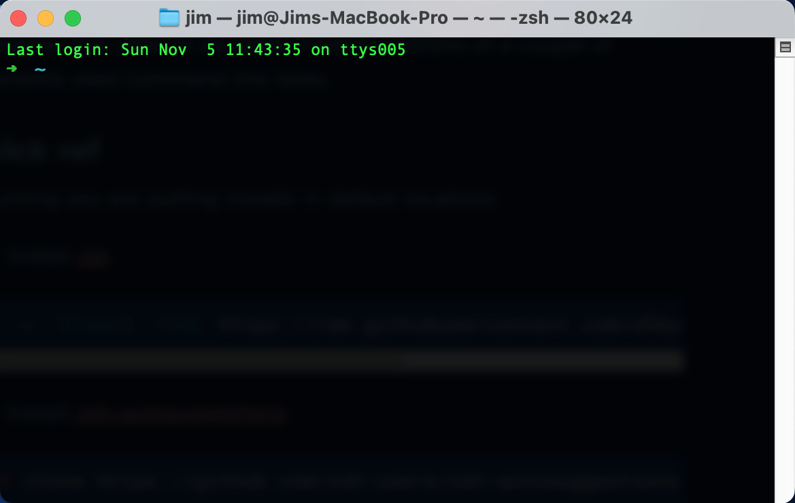
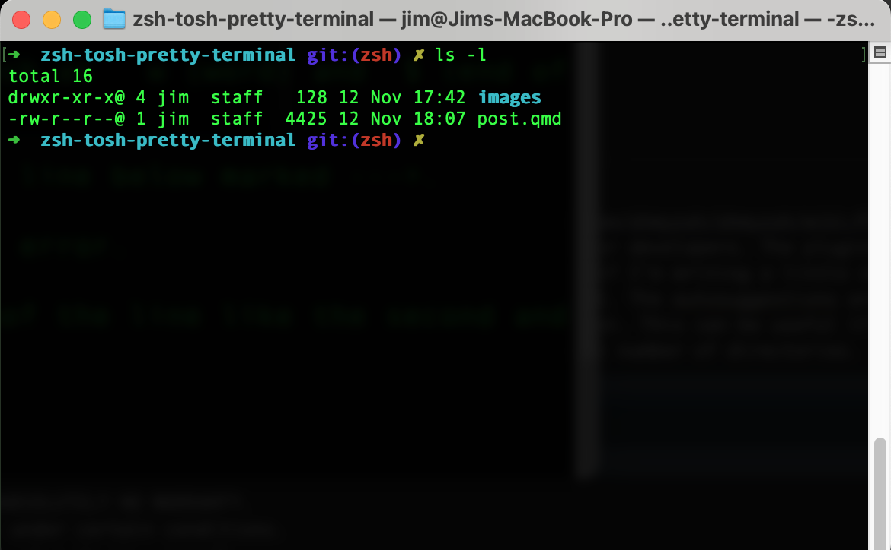
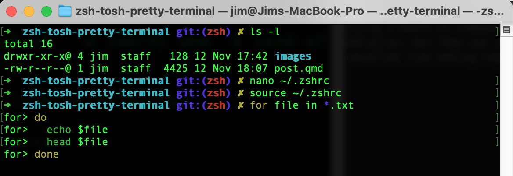
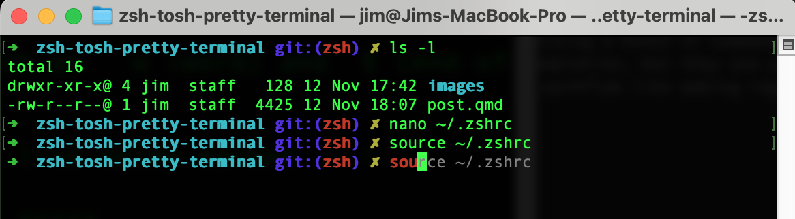
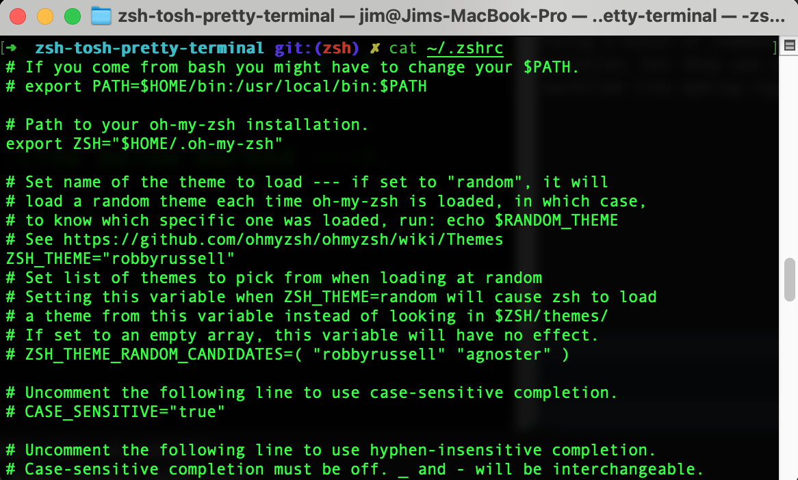
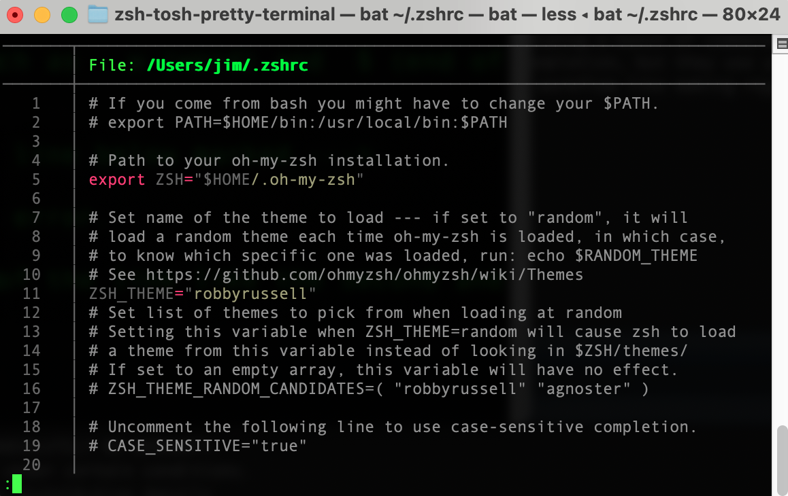
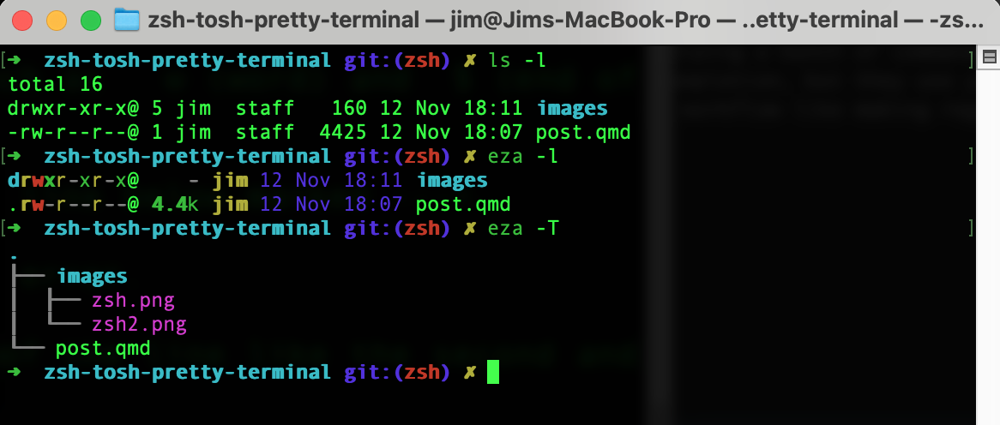
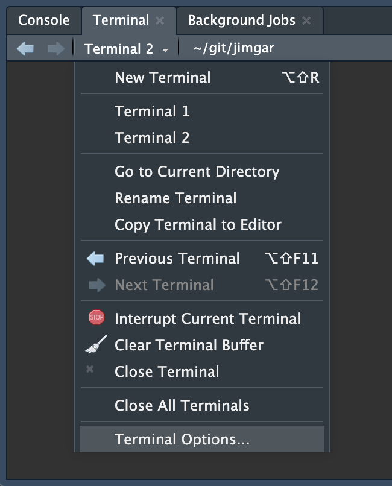
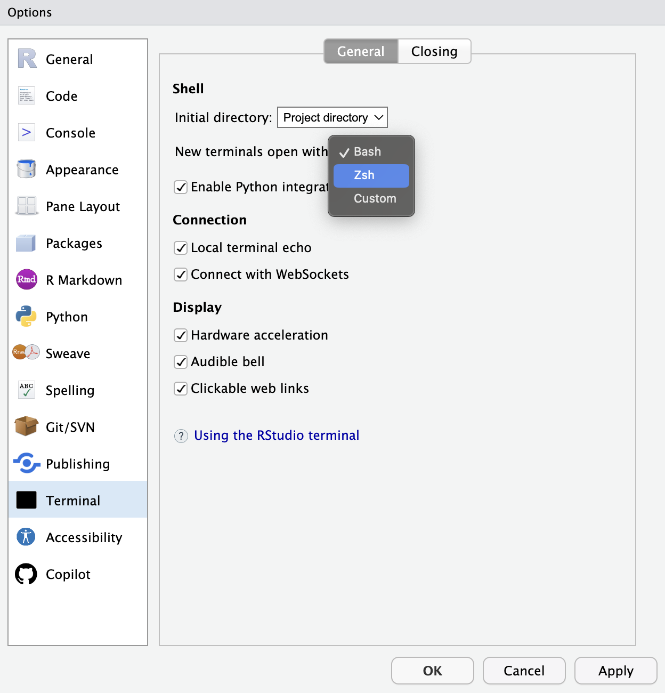
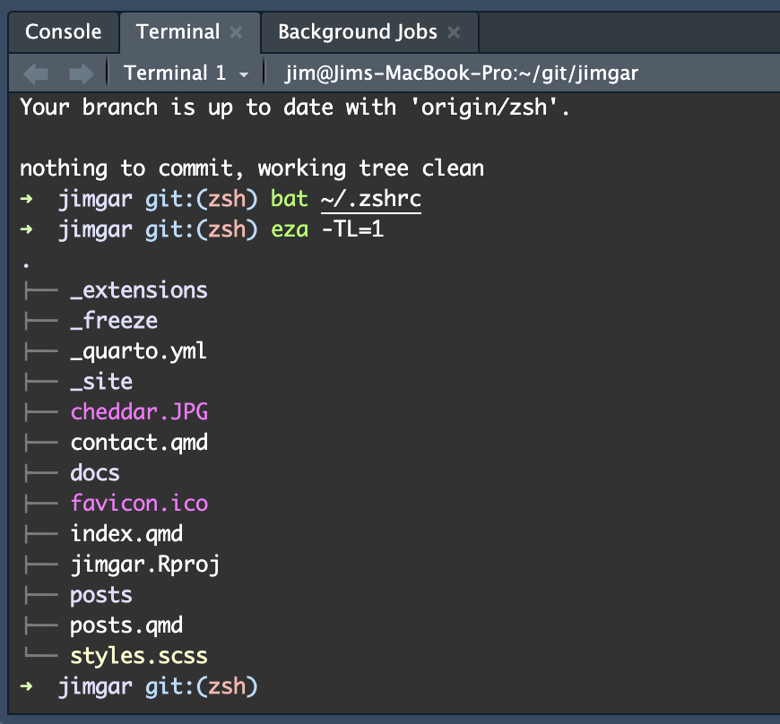

1 Overview
In this post I’m going to share a few tools that have made my zsh terminal experience on macOS a little bit nicer.
There’s two separate sets of tools. One is to Oh My Zsh with a couple of plugins. The other are so-called modern versions of a couple of commonly used command line tools. The purpose of all these tools is to make the terminal colourful and easier to use.
All of the changes here will also apply to terminals in VS Code. If you’re an R programmer using RStudio, I’m sorry, that’s not a nice thing people like us get to have :( a fool! Of course this is possible - though not the default. See Section 4 to see how to make it so.
2 Installation quick ref
Assuming you are putting installs in default locations
2.1 zsh stuff
- Install zsh (if you need to)
sh -c "$(curl -fsSL https://raw.githubusercontent.com/ohmyzsh/ohmyzsh/master/tools/install.sh)"- Install zsh-autosuggestions
git clone https://github.com/zsh-users/zsh-autosuggestions ${ZSH_CUSTOM:-~/.oh-my-zsh/custom}/plugins/zsh-autosuggestions- Install zsh-syntax-highlighting
git clone https://github.com/zsh-users/zsh-syntax-highlighting.git
echo "source ${(q-)PWD}/zsh-syntax-highlighting/zsh-syntax-highlighting.zsh" >> ${ZDOTDIR:-$HOME}/.zshrc- Update zshrc
# Add the autosuggestions and highliting to the plugins variable like so
plugins=(
git
zsh-autosuggestions
zsh-syntax-highlighting
)- Source
source ~/.zshrc2.2 cli tools
Require homebrew
- Install eza
brew install eza- Install bat
brew install batexit your terminal session and start a new one.
3 Context
3.1 zsh
zsh has come as the default shell for mac’s terminal since October 2019, with the release of macOS Catalina.
The standard experience is perfectly fine, just like bash, but is rather bare bones. There’s no syntax highlighting even for the native shell scripting. In fact, everything is black-and-white by default. I’m not down on zsh or bash as they are. I just prefer some colour to help visually parse wtf I’m looking at.
If you’re unsure you have it, run the following to check. You should see something similar to my output.
zsh --versionzsh 5.9 (x86_64-apple-darwin23.0)Also run this to check that it’s your default shell. You should see the same output as I have here.
echo $SHELL/bin/zshIf you get command not found or the default shell is something else (like bash), follow the instructions here to install zsh and make it your default.
3.2 Oh My Zsh
Oh My Zsh makes the terminal a bit more colourful and can show you things like which git branch you’re on. I’ve found it quite useful for that alone, and it is really easy to install, with a great default theme.
zsh has a config file, typically found at ~/.zshrc. What Oh My Zsh does is essentially modify your .zshrc, putting some defaults in and setting things up to further configure as you see fit.

It doesn’t look like a lot, true.

You can see the shortened current directory, which git branch I’m on (“zsh”, that I’m working in for this blog post), and some colour when calling ls -l.
Oh My Zsh also has loads of plugins to enhance functionality. Most are for working with common tools, languages and frameworks for developers. The plugins I’ve enabled are for syntax highlighting and autosuggestions. The syntax highlighting is nice because if I’m writing a little shell script, or piping a bunch of commands together, it helps me to more quickly visually parse the content. The autosuggestions are a bit like tab completion, but they use your execution history to autosuggest what might come next. This can be useful if you’re doing a repetitive workflow like making regular git commits, or moving back and forth between a small number of directories.

nano editor, you can see there’s now syntax highlighting in this for loop.
3.3 bat and eza
Both bat and eza are “modern” versions of the classic command line tools cat and ls, respectively. The former is for printing the contents of files, and the latter is for listing files and directories.
bat is particularly nice for several reasons. Let’s look at the contents of my zshrc with cat first

The output is single-colour, printed via stdout, in full. It’s literally just a dump of the file contents to the screen. Compare that to bat

That’s more like it. We’ve got syntax highlighting, and the print is paginated a la less. There’s more though - if you have git it shows modifications in the sidebar, it can show all non-printable characters, concatenate files together, and when used in pipes will behave as a drop-in replacement for cat. So all around pretty awesome.
eza I like for two reasons.
First, yes, it’s colour again. You can see in the image below that the return values for eza -l are colourised in comparison to ls -l. And I always use the -l flag, so that matters to me.
Second is the tree flag -T. Sometimes a simple tree is all you need to see a project’s structure. The really nice thing about -T is you can combine it with -L (level), and specify a depth. For example if I only wanted to show stuff in the root of my current directory, I can do eza -TL=1. You may also have noticed that the trees are colourised 👀

4 RStudio settings
It’s really simple to make zsh the default terminal in RStudio.

Terminal n. Then click Terminal Options
Apply, and OK
5 Conclusion
Go get some colour in your terminal ;)